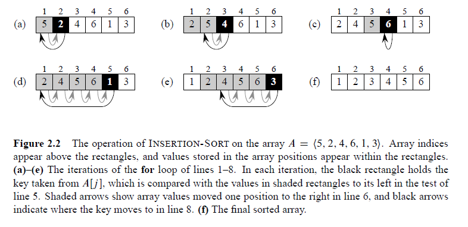
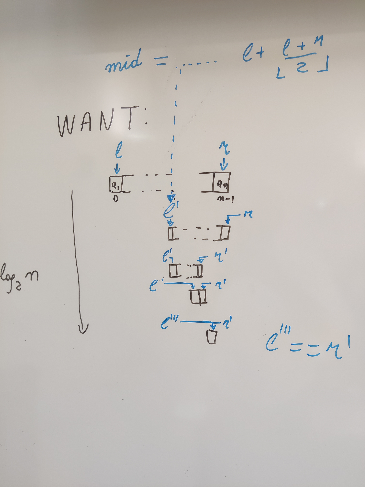

flowchart TD A[key=15] -. ??? .-> B["[2, 6, 8, 11, 16, 22, 25]"]
Instance:
a sequence of n integers: \(A = a_1, a_2\dots a_n\)
Solution:
A permutation of the values \(\pi: [1..n] \rightarrow [1..n]\)
Constraint
values never decrease: \(a_1 \leq a_2 \dots a_n\)
Let’s assume that there are no repeated values and Python notation (first elem. is in pos. 0)
\(\pi(0) = ?\)
\(\pi(1) = ?\)
\(\pi(2) = ?\)
\(\pi(3) = ?\)
…
Let’s assume that there are no repeated values
\(\pi(0) = 3:\) the elem. in position 0 now goes to pos. 3
\(\pi(1) = 1:\) the elem. in pos. 1 remains there
\(\pi(2) = 2:\) so does the elem. in pos. 2
\(\pi(3) = 0:\) the elem. in pos. 3 now goes to pos. 0
…
Solvable within \(Kn\log_2 n\) steps
Even quicker when A is already half-sorted
Python runs powersort(), an optimised version of TimSort
Istance:
a collection of n integers \(A = a_1, a_2,\dots a_n\)
an integer \(k\)
Question: does k belong to the collection?
Strings and texts are searchable: alphanumerical ordering
The textbook algo. takes up to \(n\) comparisons
Search is everywhere: implementation must be
NaNs, Nonesgenerate random FB ids (a fixed-lenght, 32-digits integer)
test the random id: does it land on an open FB profile?
Cost: at least \(N\) generations+FB accesses; dN comparisons to check for duplicate ids
Apply while instead of for to stop operations as soon as the key value is found
Return the position at which the key was found
Model call:
Special case: the input sequence is already sorted, either in increasing or decreasing order
a much more efficient algorithm is available: Binary Search
| items | Vanilla (linear) | BS |
|---|---|---|
| 1,000 | 1,000 | 10 |
| 1,000,000 | 1,000,000 | 20 |
| 1,000,000,000 | 1,000,000,000 | 30 |
Data are sorted: exploit this property to cut down the size of the list segment to be checked
flowchart TD A[key=15] -. ??? .-> B["[2, 6, 8, 11, 16, 22, 25]"]
flowchart TD A[key=15] -. ??? .-> B[11] B --> C["[2, 6, 8]"] & D["[16, 22, 25]"]
flowchart TD B[11] --> C["[2, 6, 8]"] & D[16] A[key=15] -. ??? .-> D[22] D --> E["[16]"] & F["[25]"]
flowchart TD B[11] --> C[[2, 6, 8]] & D[16] D --> E["[]"] & F["[22, 25]"] A[key=15] -. no! .-> E
We checked only two values (11 and 16) but we can stop already and answer ‘no’
input the ordered list and the key value to be searched
find the median value (here, it’s right in the middle!)
if the median \(==\) the key value then stop and say ‘yes’
but if the search key \(>\) median then the value, if it exists, can only be in second half of the list
otherwise, the key value, if it exists, can only be in the first half of the list
depending on the result of the comparison, continue searching on the ‘right’ half of the list.
BS halves the searched data at each iteration
Soon, the halving will shrink the list down to just one value, so we check and finish
How soon? It will take at most \(\log_2 n\) ‘cuts’ to shrink the list down to 1
Instance: an ordered list of 24 uppercase chars, key = 'J'
\(\lceil \log_2 24 \rceil = \lceil 4.5849 \rceil = 5\) comparisons